How Tap Am looks, sounds and shows up — for the team, designers, sponsors and partners.
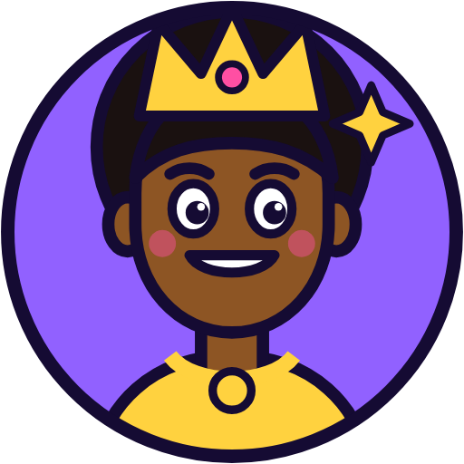
Tap Am is a live tapping game for Nigeria. Players join pools, tap as fast as they can against the clock and other players, climb 100 ranks and win prizes. It is loud, quick and proudly Naija.
The brand should feel like a game show on your phone: bold colour, chunky shapes, big italic type, a cheeky Pidgin voice — and total clarity whenever money is involved.
The tagline is written the way it is said — stretched letters and all. On the landing page it appears as “tap ammm make you chop moneyyyy”; the share image uses “Tap amm make you chop big moneyyy”. Pick one spelling and use it everywhere (we recommend the landing-page one).
“TAP” in heavy italic, “AM” knocked out of a rounded box. The slant is motion — a finger mid-tap.
Files: 01-logo/svg/logo-primary-purple.svg, logo-reverse-white-purple.svg (PNG at 600, 1200 and 2400 px wide in 01-logo/png).
Purple is the default. The green and blue boxes exist for sponsor co-branding and backgrounds where purple clashes. Use one version per piece.
Clear space: keep empty space on every side at least X = half the height of the AM box. Nothing else — text, edges, other logos — goes inside it.
The finger is our shortcut — app icon, favicon, stickers, loading spots and anywhere the full logo won’t fit.
Files: 02-mark (SVG + PNG), 03-app-icon (favicons 16–48 px, 192/512 icons, maskable icons, Apple touch icon, 96 px notification badge, 1024 px master).
Accents colour cards, badges, characters and tier labels. Each comes with a darker “shadow” used for the chunky bottom edge of cards and buttons.
Nepo players can choose other backgrounds (Ocean, Lagoon, Jungle, Sunset, Bubblegum, Gold, Cocoa, Crimson, Midnight). Their values are in 05-colours/colours.json. Marketing always uses Grape.
Use Black Italic (900) or ExtraBold Italic (800) for headlines and big numbers; Black (900) upright for buttons; Bold (700) for small labels. Set tight: line height 0.9–1.05.
Medium (500) or SemiBold (600) for body text; Bold/ExtraBold for emphasis and small caps labels. Line height 1.4–1.5. Never go under 13 px on screen.
| Role | Font | Weight | Screen size | Example |
|---|---|---|---|---|
| Hero headline | Barlow Condensed | 900 italic | 40–64 px | Tap fast, chop prize |
| Section title | Barlow Condensed | 900 | 22–28 px | Live pools |
| Button | Barlow Condensed | 900 | 17–20 px | Join pool |
| Body | Barlow | 500–600 | 15–17 px | Join a live pool and tap pass everybody. |
| Label / caption | Barlow | 800 caps | 11–13 px | PRIZE POOL |
Both fonts are free under the SIL Open Font License (06-fonts/OFL.txt) — fine for print, web, apps and ads. Fallbacks: Arial Narrow / Arial.
Twenty rank characters — one for each tier, from Fresh Finger to Tap Am Legend. Use them in social posts, rank-up moments and merch. Always show them in a circle, never cropped or recoloured.
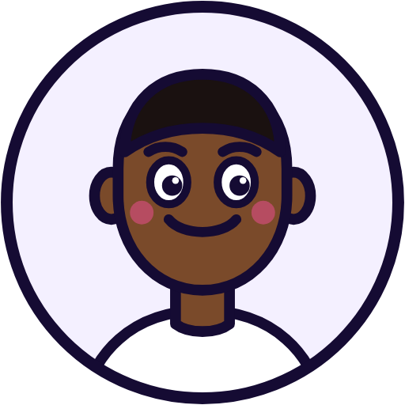
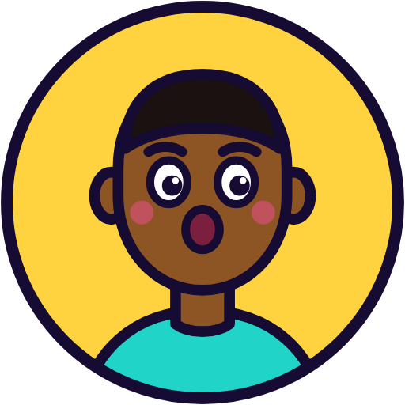
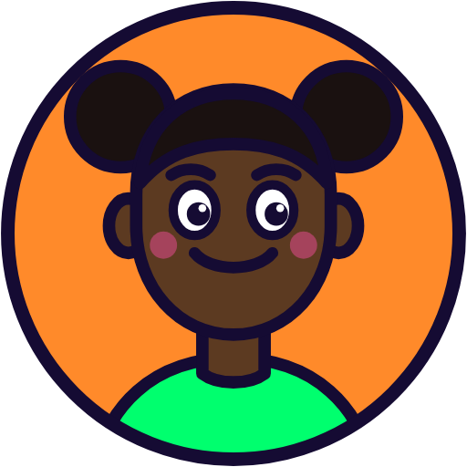
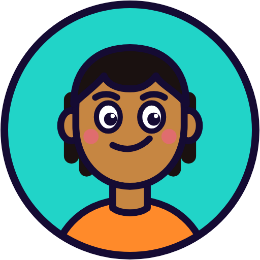
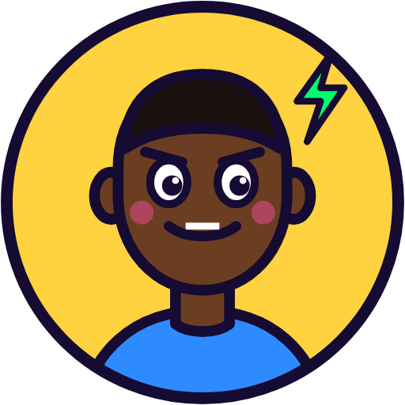
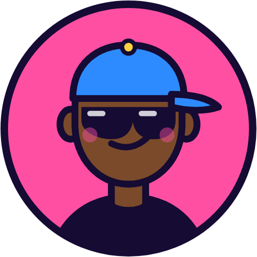
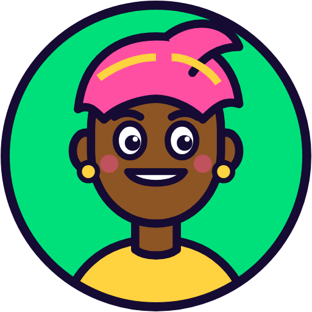
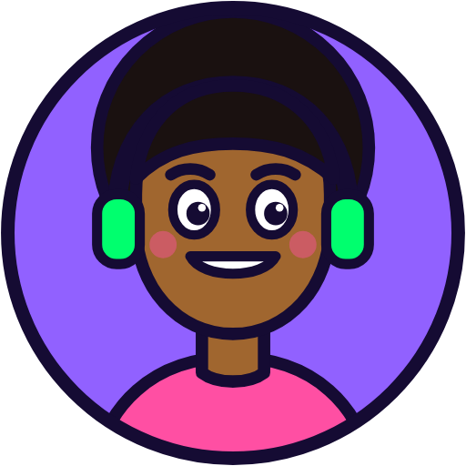
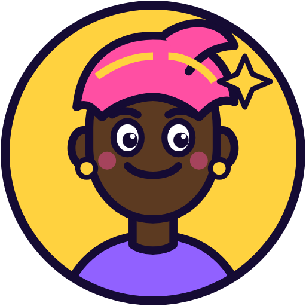
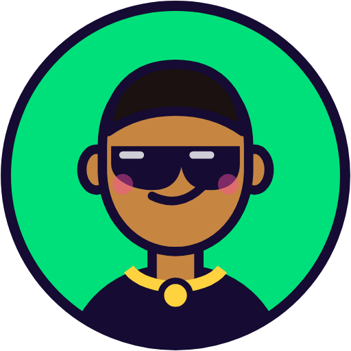
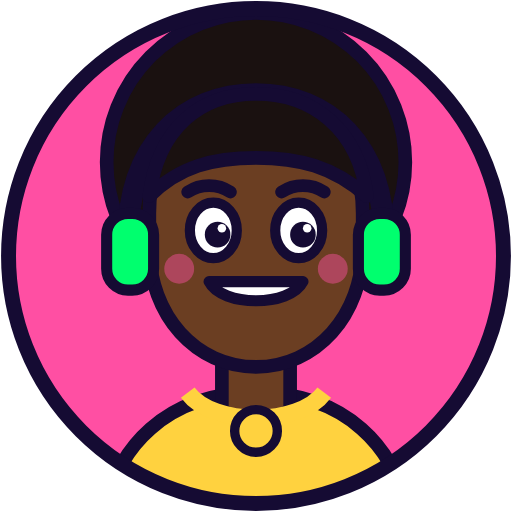
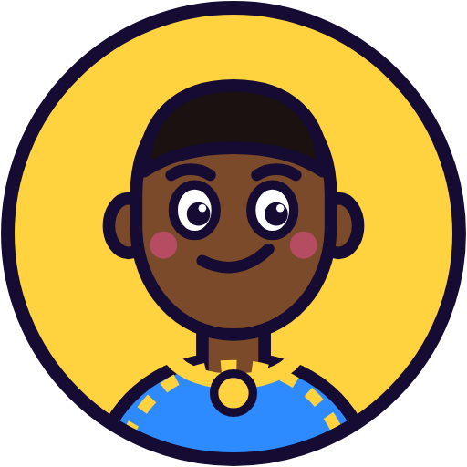
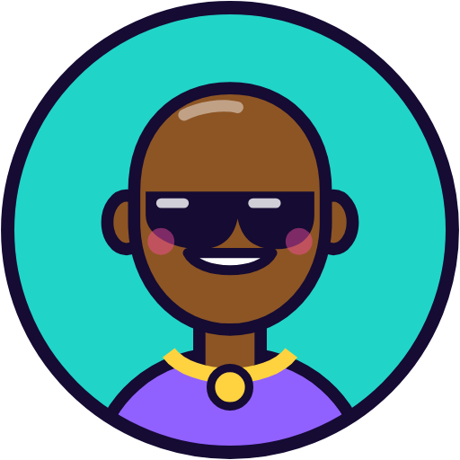
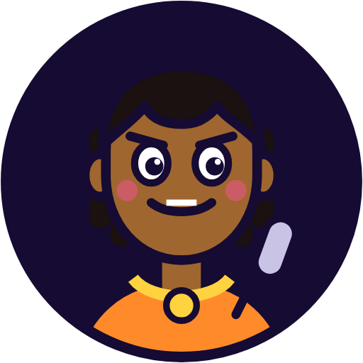
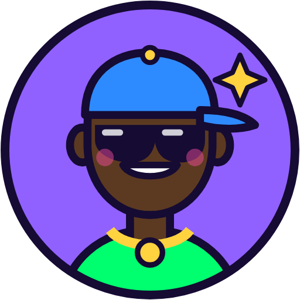
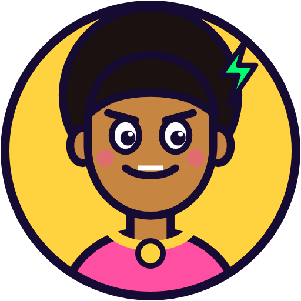
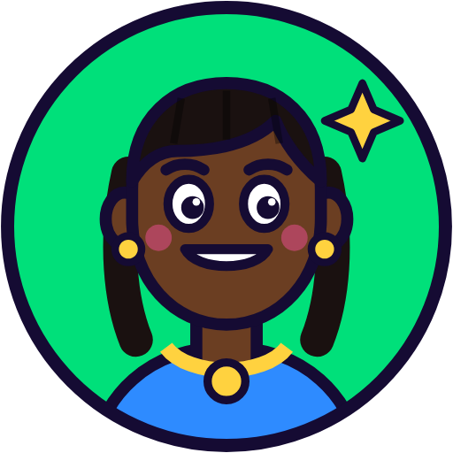
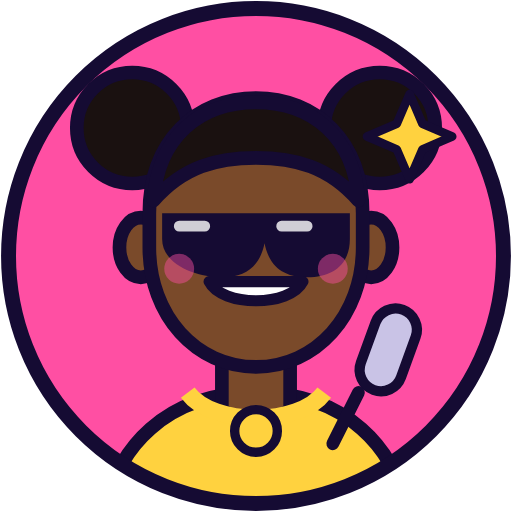
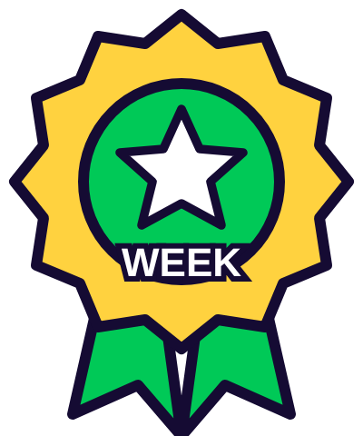
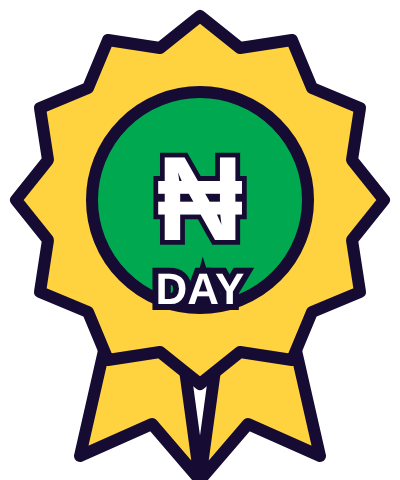
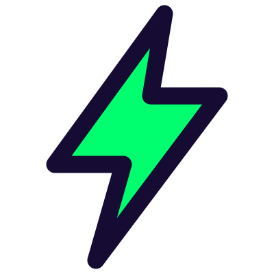
Badges: a star means most taps, ₦ means most prize money won. Stickers and badges use a thick Ink outline and flat fills.
Ten seamless patterns sit on top of a colour at 20% white. They dress up cards, tap pads and social posts. Use one pattern per piece, and keep text off the busiest ones (Leopard, Zebra, Cow).
Waves — default
Flowers
Swirl
Checker
Stripes
Ripple
Kente
Leopard
Zebra
Cow
Files: 08-patterns/overlay (transparent tiles to place on any colour) and 08-patterns/on-colour (ready-made examples on Sky).
Light Pidgin, short sentences, a wink. We sound like the friend who hypes you up — and who tells you the rules straight.
| Moment | Say |
|---|---|
| Call to play | “Tap fast, chop prize.” · “Run am back!” |
| Win | “Odogwu! You win am!” · “₦1,000 don land for your wallet!” |
| Loss | “No prize for you this time — run am back!” |
| Error | “That page no load. Try again.” (say what to do next) |
| Money rules | Plain English: “Money you add can’t be withdrawn. Only winnings can.” |
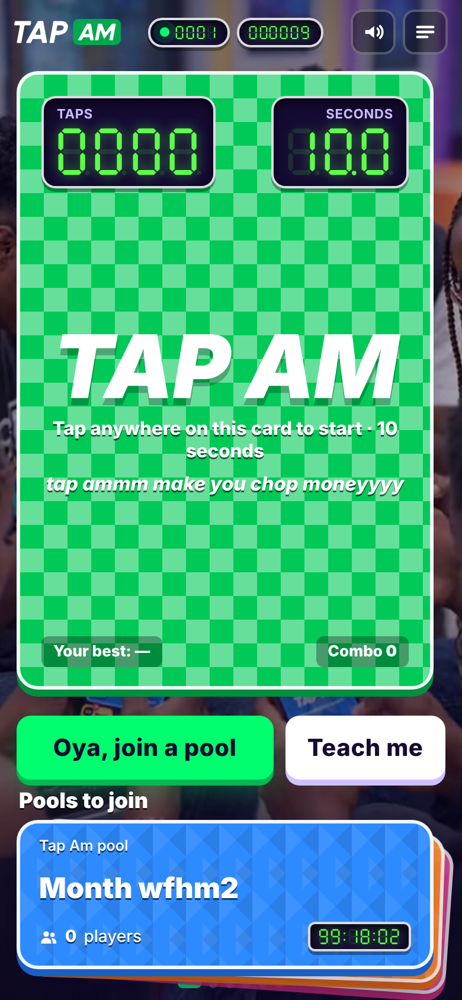
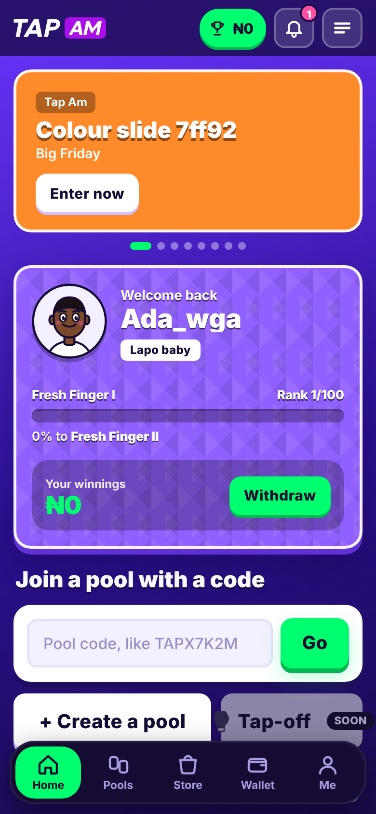
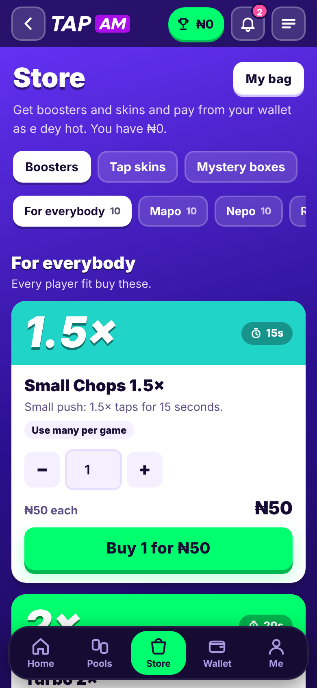
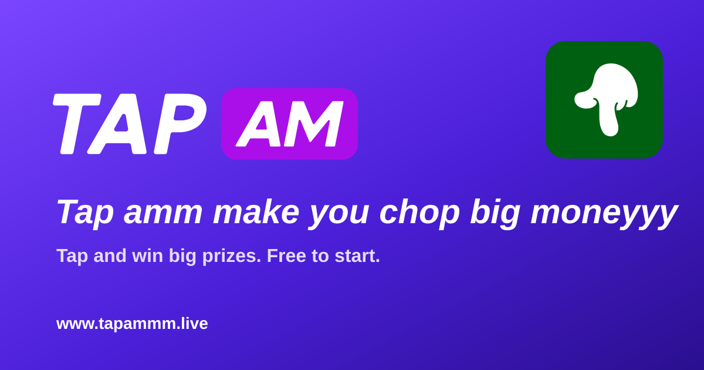
Link-share image (1200 × 630). Every page of the site shares with this image.
| Folder | What’s inside |
|---|---|
| 01-logo | SVG masters of every version (primary, reverse, green and blue boxes, one-colour white and black) + PNG at 600, 1200 and 2400 px wide + original source files |
| 02-mark | The finger mark in Mark Green, Tap Green, Ink and white (SVG + PNG 256 / 1024 px) |
| 03-app-icon | App icon (SVG + 1024 px), favicons 16–48 px, 192 / 512 icons, maskable and monochrome icons, Apple touch icon, notification badge |
| 04-social | Link-share image 1200 × 630 (PNG + SVG), landing posters and background video loops |
| 05-colours | colours.css (ready-to-use variables), colours.json, colours.txt (HEX, RGB, CMYK) |
| 06-fonts | Barlow (Regular–Black, Italic, Bold Italic) and Barlow Condensed (Regular–Black, ExtraBold & Black Italic) TTF + licence |
| 07-characters | 20 rank characters, 8 badges (SVG + PNG), 5 stickers |
| 08-patterns | 10 seamless patterns (transparent overlays + examples on colour) |